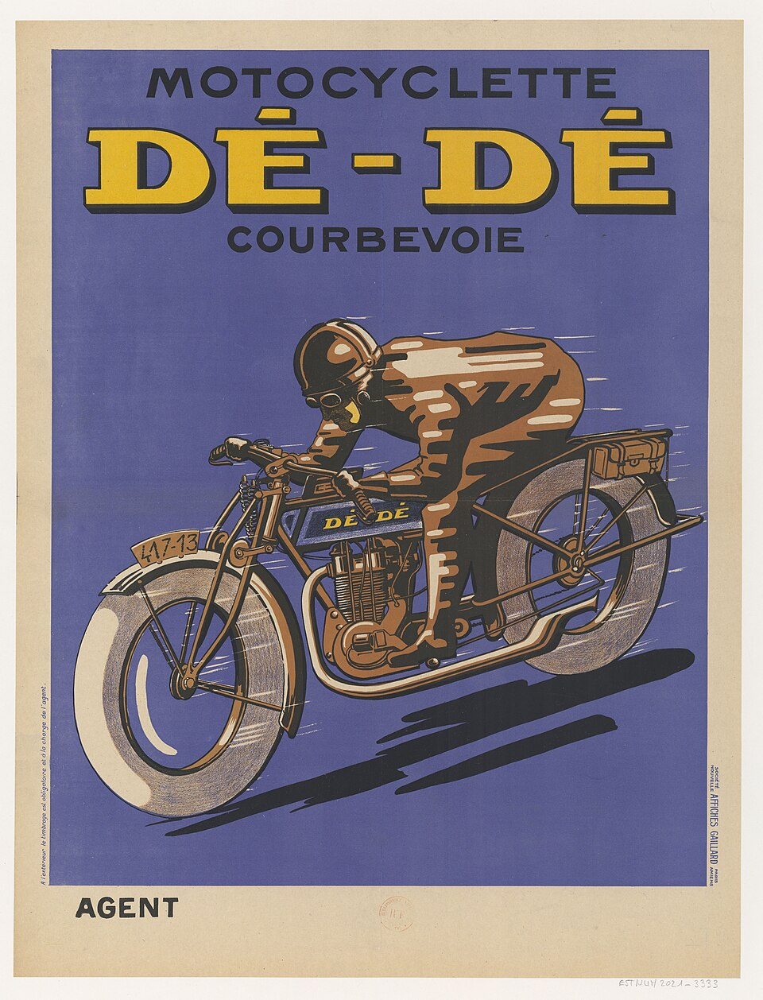
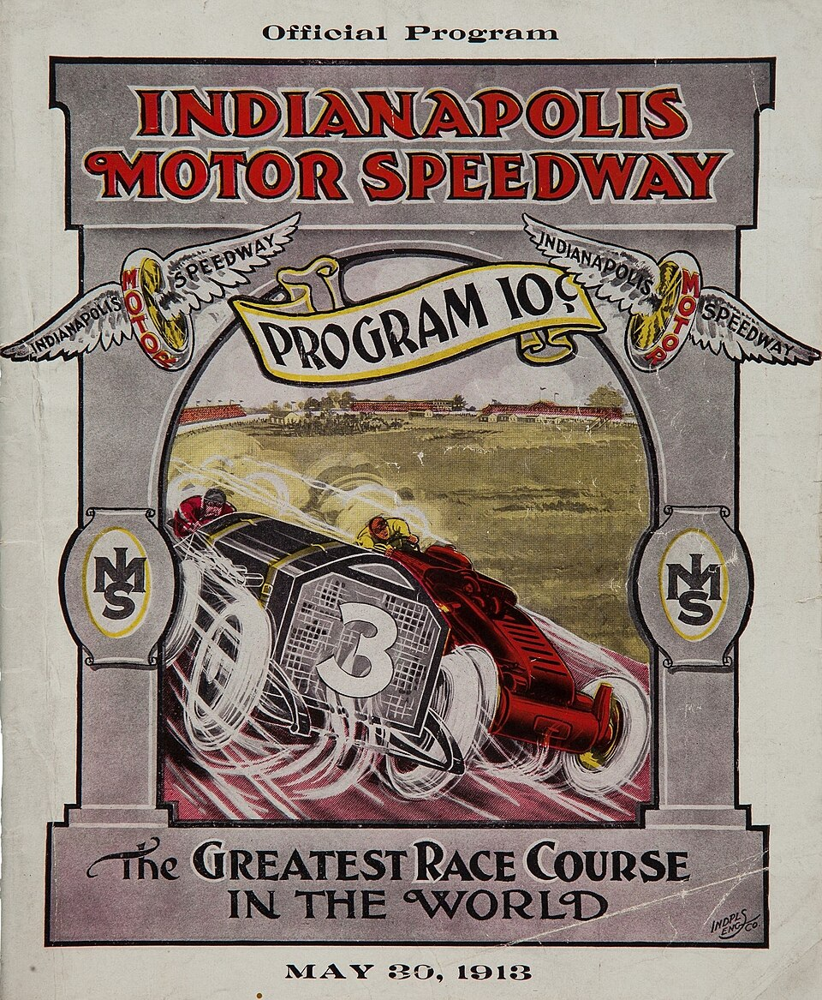

I'm a master's student in computer science at UIUC, interested in programming languages and compilers. Outside of programming, I love cars and motorcycles. My dream garage is a 3rd gen Honda Prelude, a ’90s Civic Si hatchback, and a CB750 café racer.
Ramon Asuncion
If in doubt, flat out.

About

Projects
- Ripe
- A systems programming language with a compiler written in OCaml. Supports structs, enums, slices, and pattern matching, and compiles directly to x86‑64.
- Ceramic
- My continuation of Clay for generic programming. Includes work on compiler diagnostics and C binding generation.
- Aurum
- A stack based language with an interpreter written in C. Supports loops, macros, and direct memory operations.
- Expression
- An OCaml interpreter for an esoteric language that uses emoticons as syntax. Supports variables, conditionals, and loops.
- nag
- An offline todo tracker driven by a postfix command language. Stores issues in the project directory with tags, priorities, and dependencies.
I publish other work through Subrange, Intelligent Sandbox, and Ripe.